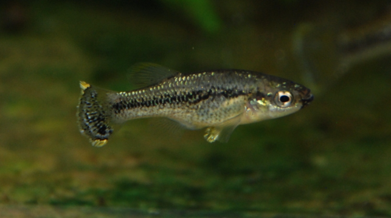

Systématique
- Ordre : Cyprinodontiformes
- Famille : Goodeidae
- Genre : Xenotaenia
- Espèce : X. resolanae
- Auteur : Turner, 1946

Xenotaenia resolanae est une espèce monotypique remarquable de la sous-famille des Goodeinae. Originaire des versants pacifiques du centre-ouest du Mexique, elle occupe une position phylogénétique particulière, étant considérée comme l'une des formes les plus originales et primitives de sa tribu. Son nom de genre dérive du grec xenos (étrange) et tainia (ruban), en référence à la structure unique de ses trophotaeniae.
Le mâle atteint environ 4 cm (TL), tandis que la femelle est plus grande, pouvant atteindre 5 cm. Le corps présente une coloration de base jaune verdâtre à olive, avec une partie dorsale plus sombre. Le trait le plus caractéristique est le patron de taches sombres (mélanophores) qui parsèment les flancs, souvent concentrées le long de la ligne latérale, ce qui lui vaut son nom commun de "Leopard splitfin". Les nageoires des mâles matures peuvent présenter des reflets jaunes ou blanchâtres plus vibrants.
L'espèce est classée "Vulnérable" (VU) par l'UICN. Sa distribution est restreinte et ses populations sont menacées par les impacts anthropiques sur les bassins fluviaux de sa région d'origine. Elle reste rare en aquariophilie et est principalement maintenue par des éleveurs passionnés et des groupes de conservation.
Xenotaenia resolanae est un poisson grégaire qui habite les petits ruisseaux et cours d'eau dotés d'une végétation dense. C'est une espèce active qui n'est pas connue pour endommager les plantes en aquarium. Elle occupe principalement les strates médiane et inférieure du bac.
Bien que pacifique dans l'ensemble, elle possède le tempérament typique des goodeidés : les mâles peuvent parader vigoureusement entre eux pour établir une hiérarchie. Elle s'épanouit dans un environnement offrant de nombreuses cachettes et zones d'ombre. C'est une espèce robuste qui supporte bien une maintenance sans chauffage si la température ambiante de la pièce reste dans des normes acceptables.
Mode : Vivipare matrotrophe (euvivipare).
La reproduction est caractérisée par une fertilisation interne via l'andropodium du mâle. Comme les autres Goodeinae, les embryons sont nourris par la mère via des trophotaeniae, qui ont ici une forme "étrange" selon le descripteur original. La gestation dure environ 60 jours.
Les portées sont généralement de taille modeste. Les alevins naissent à un stade de développement avancé et sont capables de se nourrir immédiatement après la naissance. L'espèce est connue pour ne pas être excessivement prédatrice envers ses propres alevins, surtout si le bac est bien planté. Les femelles peuvent produire une portée environ tous les deux mois en conditions optimales.
Dimorphisme sexuel : Bien marqué chez les adultes. Le mâle est plus petit et possède un andropodium (encoche caractéristique sur la nageoire anale). Ses couleurs sont souvent plus intenses lors des parades. La femelle est plus grande, plus massive, et présente un profil ventral plus arrondi.
Espérance de vie : Probablement 3 à 5 ans en aquarium.
L'espèce est endémique des bassins des rivières Purificación et Marabasco, dans les États de Jalisco et Colima au Mexique. Elle fréquente les petits ruisseaux clairs et les affluents (comme le Río Resolana) où la végétation aquatique est abondante.
L'habitat typique se compose d'eaux tropicales à courant lent, avec un substrat de gravier, de roches et de débris végétaux. La végétation y est dense, offrant protection et sites de nourrissage. L'eau y est généralement neutre à légèrement alcaline.
Répartition

Origine naturelle :
- Mexique : Bassins des rivières Purificación et Marabasco (Jalisco et Colima).
- Localité type : Río Resolana, affluent du Río Purificación.
- Endémique strict de ces deux bassins versants.
Les populations du Rio Purificacion sont considérées comme plus impactées par la présence humaine. L'espèce est de plus en plus rare dans certaines zones de sa distribution originelle.
Paramètres de maintenance
Température : 22 à 25 °C; peut tolérer des variations ambiantes (température de pièce).
pH : 7,0 à 8,0 (neutre à légèrement alcalin).
GH : 10 à 20 °dGH (eau moyennement dure à dure).
Courant : Faible à modéré.
Volume conseillé : 60–80 L pour un groupe; bac bien planté, sans chauffage nécessaire si la pièce est tempérée.
Régime alimentaire
Régime : Omnivore à tendance algivore.
Dans la nature, elle se nourrit principalement d'algues et de petits invertébrés trouvés dans la végétation. En aquarium, elle accepte les nourritures sèches classiques, mais nécessite un apport végétal régulier (spiruline).
Une alimentation variée incluant du congelé (daphnies, artémias) favorise la santé et la réussite de la reproduction. Elle consomme également les algues naturelles se développant dans l'aquarium.